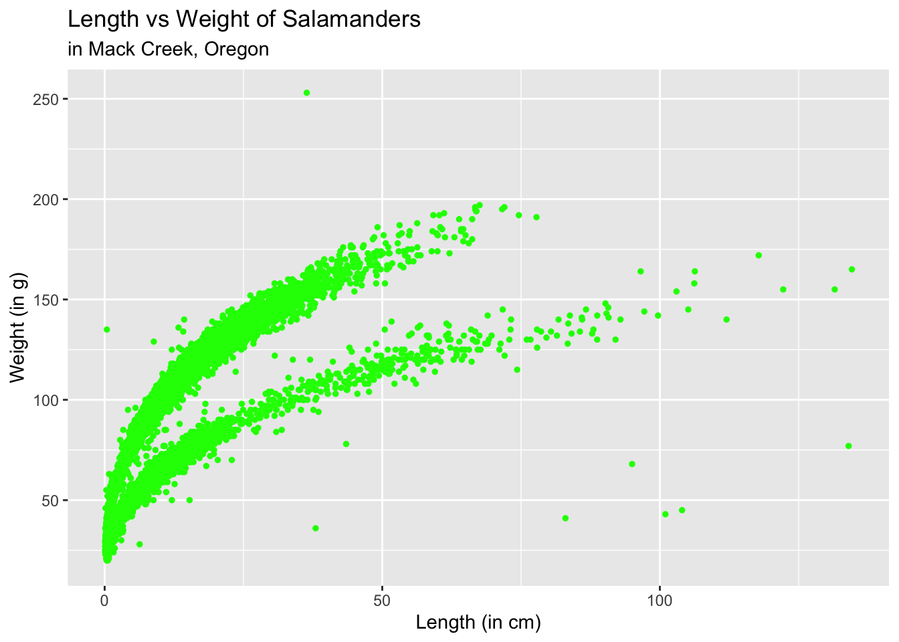
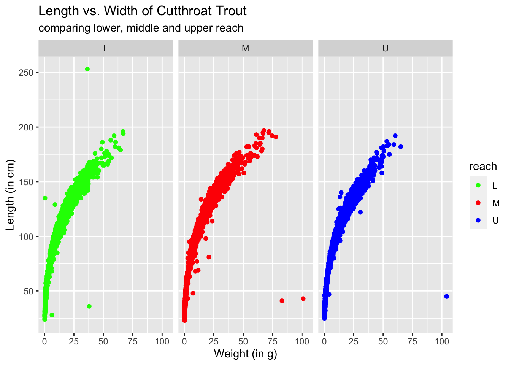

library(tidyverse)
library(here)
library(janitor)cutthroat_trout
mack_verts <- read_csv(here("data", "AS00601.csv"))
names(mack_verts) <- snakecase::to_lower_camel_case(names(mack_verts))
mack_verts# A tibble: 32,209 x 18
dbcode entity year sitecode section reach pass unitnum unittype vertIndex
<chr> <dbl> <dbl> <chr> <chr> <chr> <dbl> <dbl> <chr> <dbl>
1 AS006 1 1987 MACKCC-L CC L 1 1 R 1
2 AS006 1 1987 MACKCC-L CC L 1 1 R 2
3 AS006 1 1987 MACKCC-L CC L 1 1 R 3
4 AS006 1 1987 MACKCC-L CC L 1 1 R 4
5 AS006 1 1987 MACKCC-L CC L 1 1 R 5
6 AS006 1 1987 MACKCC-L CC L 1 1 R 6
7 AS006 1 1987 MACKCC-L CC L 1 1 R 7
8 AS006 1 1987 MACKCC-L CC L 1 1 R 8
9 AS006 1 1987 MACKCC-L CC L 1 1 R 9
10 AS006 1 1987 MACKCC-L CC L 1 1 R 10
# … with 32,199 more rows, and 8 more variables: pitnumber <lgl>,
# species <chr>, length1 <dbl>, length2 <lgl>, weight <dbl>, clip <chr>,
# sampledate <date>, notes <chr>
# ℹ Use `print(n = ...)` to see more rows, and `colnames()` to see all variable namesmc_wt_5 <- mack_verts$weight[5]
lc_length_8_to_20 <- mack_verts$length1[8:20]
mc_dates <- mack_verts$sampledatemc_salamanders <- mack_verts %>%
filter(species == "DITE")
mc_salamanders# A tibble: 11,758 x 18
dbcode entity year sitecode section reach pass unitnum unittype vertIndex
<chr> <dbl> <dbl> <chr> <chr> <chr> <dbl> <dbl> <chr> <dbl>
1 AS006 1 1993 MACKCC-L CC L 1 1 P 16
2 AS006 1 1993 MACKCC-L CC L 1 2 C 36
3 AS006 1 1993 MACKCC-L CC L 1 2 C 37
4 AS006 1 1993 MACKCC-L CC L 1 2 C 38
5 AS006 1 1993 MACKCC-L CC L 1 2 C 39
6 AS006 1 1993 MACKCC-L CC L 1 2 C 40
7 AS006 1 1993 MACKCC-L CC L 1 2 C 41
8 AS006 1 1993 MACKCC-L CC L 1 2 C 42
9 AS006 1 1993 MACKCC-L CC L 1 2 C 43
10 AS006 1 1993 MACKCC-L CC L 1 2 C 44
# … with 11,748 more rows, and 8 more variables: pitnumber <lgl>,
# species <chr>, length1 <dbl>, length2 <lgl>, weight <dbl>, clip <chr>,
# sampledate <date>, notes <chr>
# ℹ Use `print(n = ...)` to see more rows, and `colnames()` to see all variable nameslength(unique(mc_salamanders$species))[1] 1# Scatterplot length1 vs weight
scatter_length_weight <- ggplot(data = mack_verts, aes(x = weight, y = length1)) +
geom_point(color = "green",
size = 1) +
labs(title = "Length vs Weight of Salamanders",
subtitle = "in Mack Creek, Oregon",
x = "Length (in cm)",
y = "Weight (in g)")
scatter_length_weight
ggsave(plot = scatter_length_weight,
here::here("figs", "salamander_size.png"))Subsetting cutthroat trout and graphing length vs. weight
mc_trout <- mack_verts %>%
filter(species == "ONCL")
oncl_scatter <- ggplot(data = mc_trout, aes(x = weight, y = length1)) +
geom_point(aes(color = reach)) +
scale_color_manual(values = c("green", "red", "blue")) +
facet_wrap(~reach, ncol = 3) +
labs(x = "Weight (in g)",
y = "Length (in cm)",
title = "Length vs. Width of Cutthroat Trout",
subtitle = "comparing lower, middle and upper reach")
oncl_scatter
ggsave(plot = oncl_scatter,
here::here ("figs", "cutthroat_size.png"))